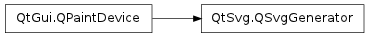

QSvgGenerator ¶

Synopsis ¶
Functions ¶
- def description ()
- def fileName ()
- def outputDevice ()
- def resolution ()
- def setDescription (description)
- def setFileName (fileName)
- def setOutputDevice (outputDevice)
- def setResolution (dpi)
- def setSize (size)
- def setTitle (title)
- def setViewBox (viewBox)
- def setViewBox (viewBox)
- def size ()
- def title ()
- def viewBox ()
- def viewBoxF ()
Detailed Description ¶
The PySide.QtSvg.QSvgGenerator class provides a paint device that is used to create SVG drawings.
This paint device represents a Scalable Vector Graphics (SVG) drawing. Like PySide.QtGui.QPrinter , it is designed as a write-only device that generates output in a specific format.
To write an SVG file, you first need to configure the output by setting the PySide.QtSvg.QSvgGenerator.fileName() or PySide.QtSvg.QSvgGenerator.outputDevice() properties. It is usually necessary to specify the size of the drawing by setting the PySide.QtSvg.QSvgGenerator.size() property, and in some cases where the drawing will be included in another, the PySide.QtSvg.QSvgGenerator.viewBox() property also needs to be set.
generator = QSvgGenerator () generator . setFileName ( path ) generator . setSize ( QSize ( 200 , 200 )) generator . setViewBox ( QRect ( 0 , 0 , 200 , 200 )) generator . setTitle ( QObject . tr ( "SVG Generator Example Drawing" )) generator . setDescription ( QObject . tr ( "An SVG drawing created by the SVG Generator Example provided with Qt." ))Other meta-data can be specified by setting the title , description and resolution properties.
As with other PySide.QtGui.QPaintDevice subclasses, a PySide.QtGui.QPainter object is used to paint onto an instance of this class:
painter = QPainter () painter . begin ( generator ) ... painter . end ()Painting is performed in the same way as for any other paint device. However, it is necessary to use the QPainter.begin() and PySide.QtGui.QPainter.end() to explicitly begin and end painting on the device.
The SVG Generator Example shows how the same painting commands can be used for painting a widget and writing an SVG file.
See also
- class PySide.QtSvg. QSvgGenerator ¶
-
Constructs a new generator.
- PySide.QtSvg.QSvgGenerator. description ( ) ¶
-
Return type: unicode This property holds the description of the generated SVG drawing.
See also
- PySide.QtSvg.QSvgGenerator. fileName ( ) ¶
-
Return type: unicode This property holds the target filename for the generated SVG drawing.
- PySide.QtSvg.QSvgGenerator. outputDevice ( ) ¶
-
Return type: PySide.QtCore.QIODevice This property holds the output device for the generated SVG drawing.
If both output device and file name are specified, the output device will have precedence.
- PySide.QtSvg.QSvgGenerator. resolution ( ) ¶
-
Return type: PySide.QtCore.int This property holds the resolution of the generated output.
The resolution is specified in dots per inch, and is used to calculate the physical size of an SVG drawing.
- PySide.QtSvg.QSvgGenerator. setDescription ( description ) ¶
-
Parameters: description – unicode This property holds the description of the generated SVG drawing.
See also
- PySide.QtSvg.QSvgGenerator. setFileName ( fileName ) ¶
-
Parameters: fileName – unicode This property holds the target filename for the generated SVG drawing.
- PySide.QtSvg.QSvgGenerator. setOutputDevice ( outputDevice ) ¶
-
Parameters: outputDevice – PySide.QtCore.QIODevice This property holds the output device for the generated SVG drawing.
If both output device and file name are specified, the output device will have precedence.
- PySide.QtSvg.QSvgGenerator. setResolution ( dpi ) ¶
-
Parameters: dpi – PySide.QtCore.int This property holds the resolution of the generated output.
The resolution is specified in dots per inch, and is used to calculate the physical size of an SVG drawing.
- PySide.QtSvg.QSvgGenerator. setSize ( size ) ¶
-
Parameters: size – PySide.QtCore.QSize This property holds the size of the generated SVG drawing.
By default this property is set to QSize(-1, -1) , which indicates that the generator should not output the width and height attributes of the <svg> element.
Note
It is not possible to change this property while a PySide.QtGui.QPainter is active on the generator.
- PySide.QtSvg.QSvgGenerator. setTitle ( title ) ¶
-
Parameters: title – unicode This property holds the title of the generated SVG drawing.
- PySide.QtSvg.QSvgGenerator. setViewBox ( viewBox ) ¶
-
Parameters: viewBox – PySide.QtCore.QRectF This property holds the PySide.QtSvg.QSvgGenerator.viewBox() of the generated SVG drawing.
By default this property is set to QRect(0, 0, -1, -1) , which indicates that the generator should not output the PySide.QtSvg.QSvgGenerator.viewBox() attribute of the <svg> element.
Note
It is not possible to change this property while a PySide.QtGui.QPainter is active on the generator.
- PySide.QtSvg.QSvgGenerator. setViewBox ( viewBox )
-
Parameters: viewBox – PySide.QtCore.QRect See also
- PySide.QtSvg.QSvgGenerator. size ( ) ¶
-
Return type: PySide.QtCore.QSize This property holds the size of the generated SVG drawing.
By default this property is set to QSize(-1, -1) , which indicates that the generator should not output the width and height attributes of the <svg> element.
Note
It is not possible to change this property while a PySide.QtGui.QPainter is active on the generator.
- PySide.QtSvg.QSvgGenerator. title ( ) ¶
-
Return type: unicode This property holds the title of the generated SVG drawing.
- PySide.QtSvg.QSvgGenerator. viewBox ( ) ¶
-
Return type: PySide.QtCore.QRect Returns PySide.QtSvg.QSvgGenerator.viewBoxF() . toRect() .
- PySide.QtSvg.QSvgGenerator. viewBoxF ( ) ¶
-
Return type: PySide.QtCore.QRectF This property holds the PySide.QtSvg.QSvgGenerator.viewBox() of the generated SVG drawing.
By default this property is set to QRect(0, 0, -1, -1) , which indicates that the generator should not output the PySide.QtSvg.QSvgGenerator.viewBox() attribute of the <svg> element.
Note
It is not possible to change this property while a PySide.QtGui.QPainter is active on the generator.